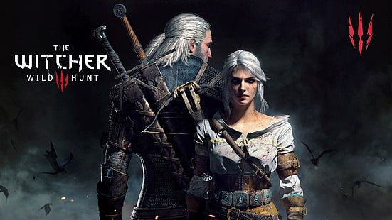

Purpose
On this page the details about game aspects that make it unique will be added. This webpage will be listing the main aspects of game play. The main page will consist of detailed aspects of the game such as the open-world game play and the aspects of the open-world. The open-world has much to offer for new and experienced gamers. The open world is vast enough to explore the Four Kingdoms of the Northern Realms - Redania, Skellige, Aedirn, as well as the Nilfgaardian Empire. While interacting with the inhabitants. Exploring many quests they have to offer as many side quests are there to complete. Helping many people and monsters achieve the peace they desire. A list of the many activities that a bored witcher can do in different corners of the land. Many challenges can be completed in fair and friendly games amongst the local folk. Even activities such as tournaments from fist fights to gwent tournaments can be played.
Open world
Kingdoms
The Four Kingdoms (or The Great Kingdoms, as in The World of the Witcher) is a collective term used to refer to the ensemble of the significant countries prior to Second Northern War with Nilfgaard. The hub of the lands of the North is composed of four largest kingdoms — Nilfgaard, Skellige, Redania, and Aedirn. They are the prime players in the great game of politics and war that decides the fate of kingdoms and dynasties.
Nilfgaardian Empire
The Nilfgaardian Empire (Ceas'raet[1] in Nilfgaardian language) is the most powerful empire in the history of the known world. It is located in the southern part of the Continent and boasts both a thriving economy and a strong, well-trained army with talented commanders. It has expanded mostly through the conquest of foreign countries, which were then turned into provinces of the Empire. The Empire's inhabitants believe that "real" Nilfgaardians are only those born in the heart of the Empire, and not those born in the conquered provinces.
Skellige
Skellige, commonly referred to as the Skellige Isles or the Isles of Skellige, is an archipelago and one of the Northern Kingdoms. The group of six islands is situated in the Great Sea, off the coast of Cintra and southwest of Cidaris and Verden. It's legendary, famous for the unrivaled corsairs and swift longships that sail many seas. Its people are united under the King of the Skellige Isles, who's elected by the jarls of the seven major clans during traditional moots. In practice, however, the kings are from the same clan or at least related.
Aedirn
Aedirn, named after Aedireen, is one of the Northern Kingdoms which lies between Temeria and the massive Mahakam mountains to the west, and the Blue and Fiery Mountains to the east. The kingdom is feuding with Kaedwen about the land called Lormark or Upper Aedirn, depending on the interested party's political persuasion. These lands have been disputed for ages, with Kaedwen laying claim to them as well.
Redania
Redania, named after Roeden,[3] is a wealthy realm which profits from trade and agriculture and one of the Four Kingdoms. The capital city of Redania is Tretogor. Other prominent cities are Oxenfurt, with the largest university in the Northern Realms and the free city of Novigrad. The kingdom's neighbors are Kovir, Caingorn, Kaedwen, Aedirn, and Temeria.
Main quests
The Witcher 3 Wild Hunt Quests.jpg These Witcher 3 walkthroughs will guide you through all of the main story missions across all the major regions and continents and include all the relevant images you'll need to track down unique treasure, locate your objectives, and tips for defeating enemies and bosses alike. For more information, check out these video guides:

Horse races
Horse Races Doing horse races is well worth your time! The saddlebags you earn will let you carry up to 160 items in your inventory, the racing saddles will give your horse more stamina, and with the blinders your horse won't get frightened by monsters so quickly. You will also earn a great deal of money for very little work (the 7th race alone gives you 700 coins and takes only 3 minutes). It's a good way to get some cash early in the game.
There are 11 horse races in the game.
3 in Velen, 4 in Novigrad, 4 in Skellige. It's recommended you do them in the order shown in the video above as some races can only be played if you won certain other races already. The ones in Velen are all at the same location and the track is the exact same. The first 3 of Novigrad are also in the same place, but each one has a different track. Keep talking to the quest giver to ride against the other opponents. The ones on Skellige all have their own unique location.
Gwent
Gwent Card Game Gwent is a collectible card game that simulates two armies meeting on the battlefield. You will always find someone willing to play Gwent in the different towns you visit. For more information, check out these guides:
How To Play Gwent
Each player must have a full deck for at least one faction to participate in a game of Gwent. This includes a minimum of 22 unit cards and a maximum of 10 special cards. These unit cards can be made up of faction-specific units or Neutral cards, and if a player has more than 22 cards, they may choose to omit them from their deck in favor of drawing a better hand.
Objective
The objective of Gwent is fairly simple: ensure that the total strength of your cards on the board is greater than that of your opponent's. At the onset of the game players draw 10 cards from their deck, and may re-draw up to two of those cards (usually those of the weakest power or least strategic value). A coin is flipped to determine who shall go first. Players place various unit cards in one of three corresponding tiers: Close Combat, Ranged Combat and Siege Combat. Certain cards have bonus abilities, such as adding additional strength to cards in their row or re-drawing a discarded unit.
Collect Them All
One of the earliest missions players recieve in Wild Hunt is Collect 'Em All, which is an over-arching quest to find at least one of every Gwent card to complete a deck for every faction. This can be accomplished in several ways - Gwent cards can often be found for sale by various merchants, and many merchats will offer to play a round or two with Geralt. If the Witcher beats the merchant, they will offer him a free Gwent card - though this will only happen once per merchant There are also players whose proficiency for Gwent is well known, and locating and defeating them become side quests of their own. These players will yield rare cards upon defeat, usually a Hero card for the faction they favor.
System Requirements
Here are the The Witcher 3: Wild Hunt System Requirements (Minimum) CPU: Intel CPU Core i5-2500K 3.3GHz / AMD CPU Phenom II X4 940 CPU SPEED: Info RAM: 6 GB VIDEO CARD: Nvidia GPU GeForce GTX 660 / AMD GPU Radeon HD 7870 DEDICATED VIDEO RAM: 2048 MB PIXEL SHADER: 5.0 VERTEX SHADER: 5.0 OS: 64-bit Windows 7, 64-bit Windows 8 (8.1) or 64-bit Windows 10 FREE DISK SPACE: 35 GB
The Witcher 3: Wild Hunt Recommended Requirements CPU: Intel CPU Core i7 3770 3.4 GHz / AMD CPU AMD FX-8350 4 GHz CPU SPEED: Info RAM: 8 GB VIDEO CARD: Nvidia GPU GeForce GTX 770 / AMD GPU Radeon R9 290 DEDICATED VIDEO RAM: 2048 MB PIXEL SHADER: 5.0 VERTEX SHADER: 5.0 OS: 64-bit Windows 7, 64-bit Windows 8 (8.1) or 64-bit Windows 10 FREE DISK SPACE: 35 GB